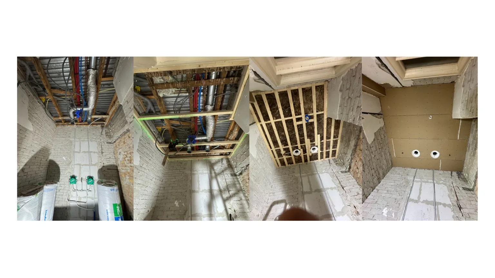

Project — Den Haag
Kijkhoeflaan, Den Haag — vloer en plafondopbouw
Technische voorbereiding van vloeren en plafondconstructie voor verdere afwerking.


Bij dit project lag de focus op een degelijke technische voorbereiding van de woning. Vloeren zijn voorbereid voor verdere opbouw en plafonds zijn opgebouwd met een houten constructie, waarna de afwerking kon plaatsvinden.
Dit soort werk vraagt om nauwkeurigheid, planning en een nette uitvoering per fase. Precies daarin onderscheidt WGMI Bouw zich: technisch goed voorbereid en representatief opgeleverd.
Offerte aanvragen